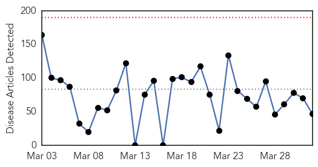
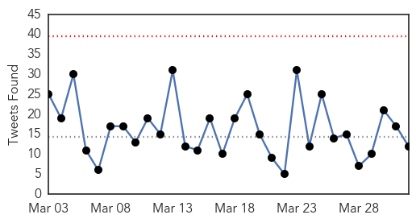
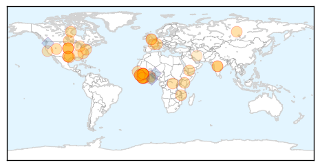
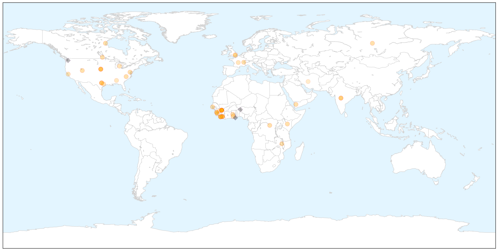
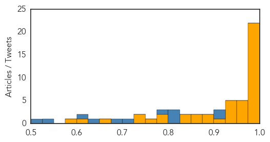

Ebola
30-Day Web Trend
0 alerts, 0 warnings

30-Day Twitter Trend
0 alerts, 0 warnings

Article Locations

X

Article Confidences
Top Articles:
- 1.000
- Ebola vaccine passes safety test in Geneva trial
- 1.000
- Ebola: 3 Confirmed Dead in Liberia
- 1.000
- IOM News
- 1.000
- Liberia calls for sexual abstinence to cut Ebola transmission risk
- 0.998
- US Aid Workers In Nebraska Monitored For Ebola Now Released Following Quarantine Procedures
- 0.998
- Her Excellency Dr. Ocansey Unmasks Ebola Impact!
- 0.997
- Mutated Ebola virus infecting Utah residents
- 0.996
- Last Cuban Ebola Medics Leave Sierra Leone, New Clampdown for Easter
- 0.995
- Reports of Suspected Ebola Cases Skyrocket in Sierra Leone After Three-Day Lockdown
- 0.994
- US Government to boost New Ebola Drug
- 0.993
- Human Rights and Democracy Report - Case Study: Ebola - Human Rights in West Africa
- 0.991
- Guinea Finds 3 Ebola Cases in Alumina Hub of Fria
- 0.991
- Nebraska hospital discharges five patients monitored for Ebola
- 0.991
- Guinea Finds 3 Ebola Cases in Alumina Hub of Fria
- 0.990
- VSV-EBOV Ebola vaccine appears safe and generates immune response
- 0.989
- How Ebola changed the world
- 0.988
- Guinea finds three Ebola cases in the alumina hub of Fria
- 0.987
- 1st human studies promising for Ebola vaccine designed in Winnipeg
- 0.986
- Japanese Company Develops 15-Minute Ebola Test
- 0.984
- Experimental Ebola vaccine makes researchers hopeful in human trials
- 0.982
- Gov’t commends Ghanaian medical volunteers
- 0.975
- Flu can be miserable or even fatal for dogs and a recent outbreak has sickened hundreds
- 0.975
- Government commends Ghanaian medical volunteers
- 0.974
- Health Ministry calls for partnership to keep Ebola out
- 0.969
- 5 US health workers released after Ebola monitoring
- 0.957
- Veep commends Ghanaian Medical volunteers on Ebola
- 0.952
- A Recombinant Vesicular Stomatitis Virus Ebola Vaccine — Preliminary Report — NEJM
- 0.950
- Senate passes bill to deal with future infectious disease outbreaks
- 0.944
- 140 suspected Ebola cases since March 2014 tested negative
- 0.942
- Remaining U.S. troops in Liberia committed to stamping out Ebola
- 0.936
- Supporting public health institute in Malawi
- 0.927
- The New Dawn Liberia
- 0.910
- MOH, NIM, Please Rescue Jene Wonde, West Point, Other Survivors!
- 0.892
- Senate moves to bolster infectious disease response
- 0.875
- Reuters Health News Summary
- 0.858
- San Mateo County honors Redwood City doctor who treated Ebola patients
- 0.856
- San Mateo County honors Redwood City doctor who treated Ebola patients
- 0.850
- Disease models need room for randomness, paper urges
- 0.841
- Sharing genetic data in health crises
- 0.779
- Ebola battle won: ‘I’m lucky to be alive’
- 0.779
- ‘Visibly Pregnant’ Girls Banned From Graduating
- 0.774
- Five on watch for Ebola in Omaha have been released
- 0.742
- Texas State Senator Charles Schwertner
- 0.738
- A Resource for Christian Living
- 0.668
- Strengthening the Health System, Gov’t to Build Referral Hospital in Each County, Lawmaker Discloses
- 0.600
- Islamic State fighters being eaten alive by SECOND flesh eating bug
- 0.590
- Texas Senate Passes Bill That Would Determine How Texas Handles Infectious Disease Outbreaks
Top Tweets:
- 0.912
- Ebola Update: 25030 confirmed probable and suspected cases reported in 3 most affected countries with 10398 deaths. EbolaResponse
- 0.907
- 10 Ebola cases found during Sierra Leone's shutdown - U.S. News & World Report http://t.co/r5Wi4Ubyvz ebola EVD
- 0.817
- How a Bloody Brawl Sparked Fears of a New Ebola Outbreak in Liberia - Newsweek http://t.co/yg5ogo7Ern ebola EVD
- 0.804
- RT: AfricaAgainstEbola. Join the SMS campaign today and donate! SMS Stop Ebola to 40797. We are Africa against Ebola http://…
- 0.800
- .@WHO Ebola situation report: 82 new confirmed cases last week. 57 in Guinea 25 in Sierra Leone 0 in Liberia. http://t.co/fNXS57JFdC
- 0.787
- How a Bloody Brawl Might Have Brought Back Ebola in Liberia - Newsweek http://t.co/Xu5vxdcIFj ebola EVD
- 0.709
- Five US health workers released after Ebola monitoring in Nebraska - Reuters http://t.co/8M6g90kD4i ebola EVD
- 0.678
- CDC recruiting for Ebola response in Guinea esp Guinean health care/public health professionals living in US. http://t.co/2000HjvTMi
- 0.638
- Merck NewLink Ebola vaccine appears safe effective in new studies - Reuters http://t.co/0Wc5VTyND1 ebola EVD
- 0.618
- Five US health workers released after Ebola monitoring in Nebraska - The Guardian http://t.co/JUz0zzxWdR ebola EVD
- 0.532
- Sénégal. Réapparition Ebola en Guinée - Les mesures de prévention renforcées à la frontière http://t.co/gshNl5j3TN
- 0.508
- Ebola scare shows problems in computer models - Yahoo News http://t.co/OcuBMugqoC ebola EVD